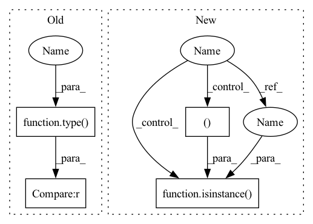

Pattern ID :38075
Before Change
def fuse(self): // fuse model Conv2d() + BatchNorm2d() layers
print("Fusing layers... ")
for m in self.model.modules():
if type(m) is Conv and hasattr(m, "bn"):
m.conv = fuse_conv_and_bn(m.conv, m.bn) // update conv
delattr(m, "bn") // remove batchnorm
m.forward = m.fuseforward // update forward
After Change
def fuse(self): // fuse model Conv2d() + BatchNorm2d() layers
LOGGER.info("Fusing layers... ")
for m in self.model.modules():
if isinstance(m , (Conv, DWConv )) and hasattr(m, "bn"):
m.conv = fuse_conv_and_bn(m.conv, m.bn) // update conv
delattr(m, "bn") // remove batchnorm
m.forward = m.forward_fuse // update forward
In pattern: SUPERPATTERN
Frequency: 6
Non-data size: 4
Instances Fragment ID: 109151795
Project Name: pooya-mohammadi/deep_utils
Commit Name: 7d442fe6eef7ccd63661e0463e87358ff795d709
Time: 2021-11-26
Author: practical.ai.programming@gmail.com
File Name: deep_utils/vision/object_detection/yolo/v5/torch/models/yolo.py
M Class Name: Model
N Class Name: Model
M Method Name: fuse(1)
N Method Name: fuse(1)
M Parent Class: nn.Module
N Parent Class: nn.Module
M File Name: deep_utils/vision/object_detection/yolo/v5/torch/models/yolo.py
N File Name: deep_utils/vision/object_detection/yolo/v5/torch/models/yolo.py
M Start Line: 169
M End Line: 170
N Start Line: 219
N End Line: 221
Before Change def generate_exp_name(exp_name, params):
for k, v in params.items():
if type(v) == int :
pass
elif type(v) == list:
v = [str(iv) for iv in v]After Change def generate_exp_name(exp_name, params):
for k, v in params.items():
if isinstance( v, (int, str, bool )) :
pass
elif type(v) == list:
v = [str(iv) for iv in v] Fragment ID: 109151794
Project Name: ryanxingql/powerqe
Commit Name: 4b41d2b60407bbbc2a25dfcaba1edade8ff9dc53
Time: 2023-04-28
Author: ryanxingql@gmail.com
File Name: configs/script.py
M Class Name: AnonimousClass
N Class Name: AnonimousClass
M Method Name: generate_exp_name(2)
N Method Name: generate_exp_name(2)
M Parent Class:
N Parent Class:
M File Name: configs/script.py
N File Name: configs/script.py
M Start Line: 2
M End Line: 9
N Start Line: 2
N End Line: 10
Before Change
def fuse(self): // fuse model Conv2d() + BatchNorm2d() layers
LOGGER.info("Fusing layers... ")
for m in self.model.modules():
if type(m) is Conv and hasattr(m, "bn"):
m.conv = fuse_conv_and_bn(m.conv, m.bn) // update conv
delattr(m, "bn") // remove batchnorm
m.forward = m.fuseforward // update forwardAfter Change
def fuse(self): // fuse model Conv2d() + BatchNorm2d() layers
LOGGER.info("Fusing layers... ")
for m in self.model.modules():
if isinstance( m, (Conv, DWConvClass )) and hasattr(m, "bn"):
m.conv = fuse_conv_and_bn(m.conv, m.bn) // update conv
delattr(m, "bn") // remove batchnorm
m.forward = m.forward_fuse // update forward Fragment ID: 109151798
Project Name: wmcnally/kapao
Commit Name: 587c4b4b81fb4e9423e33a2a235731742386d03c
Time: 2021-08-02
Author: glenn.jocher@ultralytics.com
File Name: models/yolo.py
M Class Name: Model
N Class Name: Model
M Method Name: fuse(1)
N Method Name: fuse(1)
M Parent Class: nn.Module
N Parent Class: nn.Module
M File Name: models/yolo.py
N File Name: models/yolo.py
M Start Line: 204
M End Line: 205
N Start Line: 204
N End Line: 205
Before Change
mi.bias = torch.nn.Parameter(b.view(-1), requires_grad=True)
def _initialize_weights(self):
for m in self.modules():
t = type( m)
if t is nn.Conv2d :
pass // nn.init.kaiming_normal_(m.weight, mode="fan_out", nonlinearity="relu")
elif t is nn.BatchNorm2d:
m.eps = 1e-3After Change
conv.bias = torch.nn.Parameter(bias.view(-1), requires_grad=True)
def _initialize_weights(self):
for m in self.modules():
if isinstance(m, nn.BatchNorm2d):
m.eps = 1e-3
m.momentum = 0.03
elif isinstance( m, (nn.LeakyReLU, nn.ReLU, nn.ReLU6, nn.Hardswish, nn.SiLU )) :
m.inplace = True
def initialize_param_groups(self, lr: float, training_params: HpmStruct) -> list: Fragment ID: 109151789
Project Name: deci-ai/super-gradients
Commit Name: d4df44b403556cb548016d1403323d79aafe24ee
Time: 2022-06-22
Author: 80472096+shaydeci@users.noreply.github.com
File Name: src/super_gradients/training/models/detection_models/yolov5_base.py
M Class Name: YoLoV5Base
N Class Name: YoLoV5Base
M Method Name: _initialize_weights(1)
N Method Name: _initialize_weights(1)
M Parent Class: SgModule
N Parent Class: SgModule
M File Name: src/super_gradients/training/models/detection_models/yolov5_base.py
N File Name: src/super_gradients/training/models/detection_models/yolov5_base.py
M Start Line: 409
M End Line: 419
N Start Line: 428
N End Line: 435
Before Change
def fuse(self): // fuse model Conv2d() + BatchNorm2d() layers
LOGGER.info("Fusing layers... ")
for m in self.model.modules():
if type(m) is Conv and hasattr(m, "bn"):
m.conv = fuse_conv_and_bn(m.conv, m.bn) // update conv
delattr(m, "bn") // remove batchnorm
m.forward = m.fuseforward // update forwardAfter Change
def fuse(self): // fuse model Conv2d() + BatchNorm2d() layers
LOGGER.info("Fusing layers... ")
for m in self.model.modules():
if isinstance( m, (Conv, DWConv )) and hasattr(m, "bn"):
m.conv = fuse_conv_and_bn(m.conv, m.bn) // update conv
delattr(m, "bn") // remove batchnorm
m.forward = m.forward_fuse // update forward Fragment ID: 109151791
Project Name: positive666/yolov5_research
Commit Name: dd05956165521871db879b745d20e71a48e3569f
Time: 2021-10-24
Author: 286040359@qq.com
File Name: models/yolo.py
M Class Name: Model
N Class Name: Model
M Method Name: fuse(1)
N Method Name: fuse(1)
M Parent Class: nn.Module
N Parent Class: nn.Module
M File Name: models/yolo.py
N File Name: models/yolo.py
M Start Line: 265
M End Line: 266
N Start Line: 277
N End Line: 278